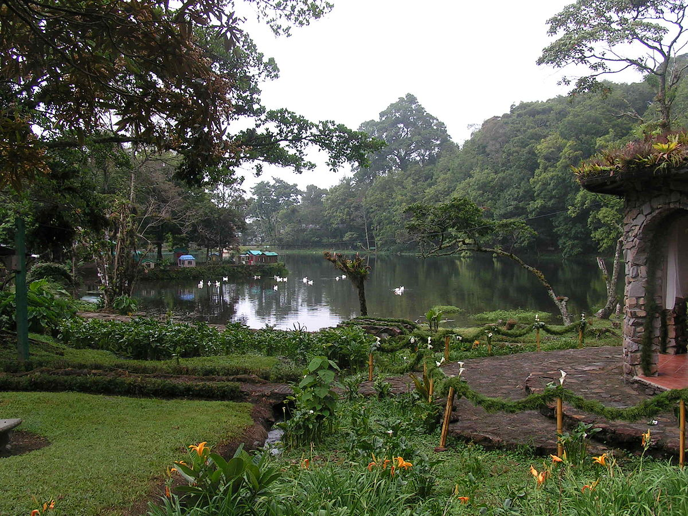

Acerca del autor de esta pagina web...
Actualmente nos dedicamos a las actividades realcionados a la agricultura y trabajos del ramo de la construccion.


Esta pagina surge como un producto del deseo de aprender a crear paginas web y publicar temas de interes personal.En mis tiempos libre me dedico a indagar con diferentes programas iformaticos y dedicarletiempo a la musica.
Estimado lector te deseamos lo mejor de lo mejor en tus planes de vida,y no olvides en seguirnos en este portal digital.
Tambien desarrollamos las siguientes actividades.

DISEÑAMOS Y MODELAMOS PROYECTOS

MUSICA Y CREACION DE RITMOS

APOYAMOS AL MEDIO AMBIENTE AL CONTAR CON UN MINIVIVERO.
Si tienes dudas dejanos tus comentarios y en cuanto podamos con gusto responderemos tus inquietudes.